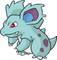

Nome: Whitney
Insígnia: Planície
Cidade: Goldenrod
Biografia:
A cidade de Goldenrod é uma das maiores de todo o planeta, igualável às metrópoles de Celadon/Saffron, Mauville/Lilycove ou Veilstone/Hearthome. Para ocupar o banco de líder de ginásio daqui, somente um treinador de grande experiência, certo? Errado! Diferente de todos os demais encarregados de guiar os treinadores em suas jornadas, Whitney não treinou sua vida toda visando conquistar o posto. É famosa por sua Miltank, que recebeu da fazenda de leite de seu tio.
Whitney é doce e carinhosa, sempre disposta a ajudar e sempre fica triste quando é derrotada. Tendo iniciado seus treinamentos por influências de algumas amigas, seu talento nato fez com que ela logo chegasse ao topo do ginásio em que apenas garotas são aceitas. Dias depois, ela tornou-se a mais jovem garota das líderes de Johto. E, apesar de sua aparência e maneiras infantis, aqueles que a subestimaram – e sua poderosa Miltank – se arrependeram profundamente.
Pokémon:
